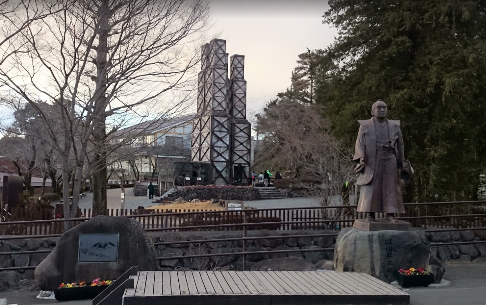
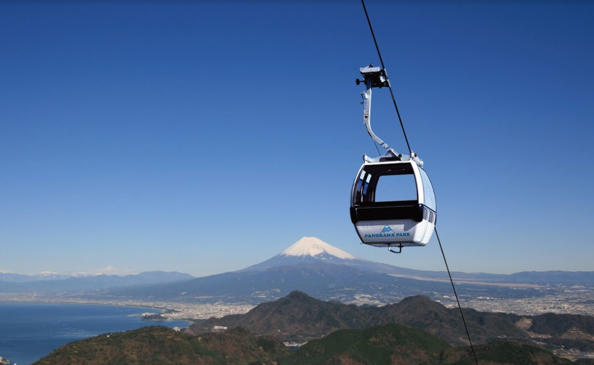
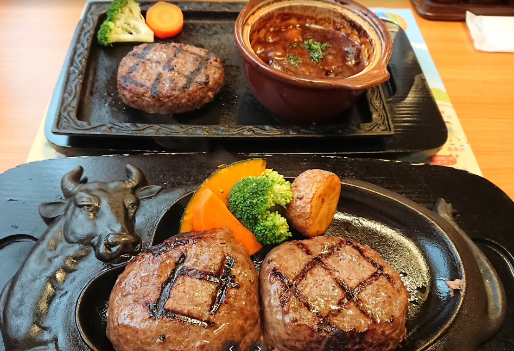
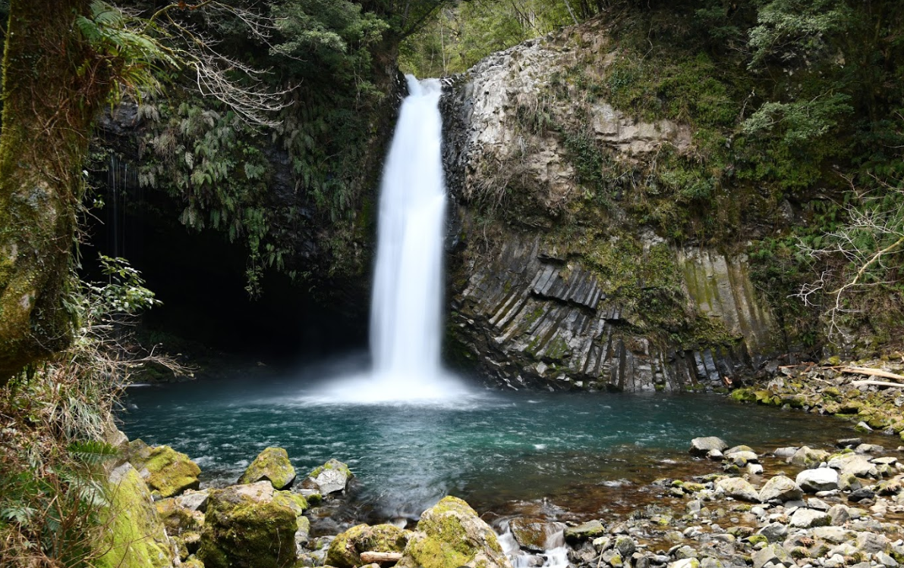

湯ヶ島たつた

2日目の宿。正式には「水のみち 風のみち 湯ヶ島たつた」googleの評価も結構高いので期待値は高い。あと思ったより山中にあるようで二日目の観光地からは南に位置してるからアクセスは微妙かも
韮山反射炉

世界遺産のなんとか反射炉。実際読めなさそうだけど韮だけだと読めちゃうね。世界遺産だけどたぶんそんなに見るところない。
伊豆の国パノラマパーク

景色きれいすぎ問題がある。外に座れるところもあるらしいから晴れてたら絶対気持ちいスポット！11月だと寒いかも...防寒はしっかりしたほうが◎
さわやか 函南店

静岡といえばさわやかのハンバーグ御殿場が一番行列が多くて5時間くらいかかるときもあるからここのほうがまだ空いてるかも！ゴールドラッシュ並みにおいしい！
浄蓮の滝

観光名所として結構有名らしいけど俺は初めて知った笑。ほかのところとはチャット離れているけどどの旅行サイトにも載ってるっぽいので行ってみた方がいいかも